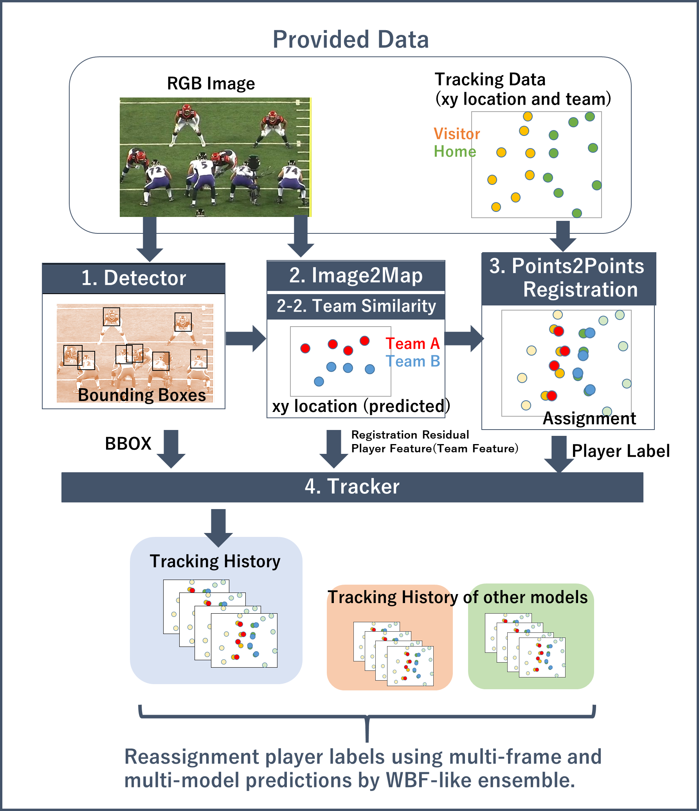
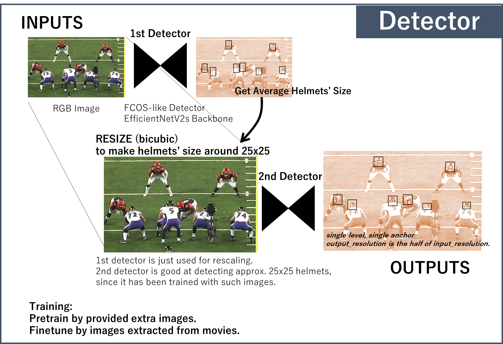
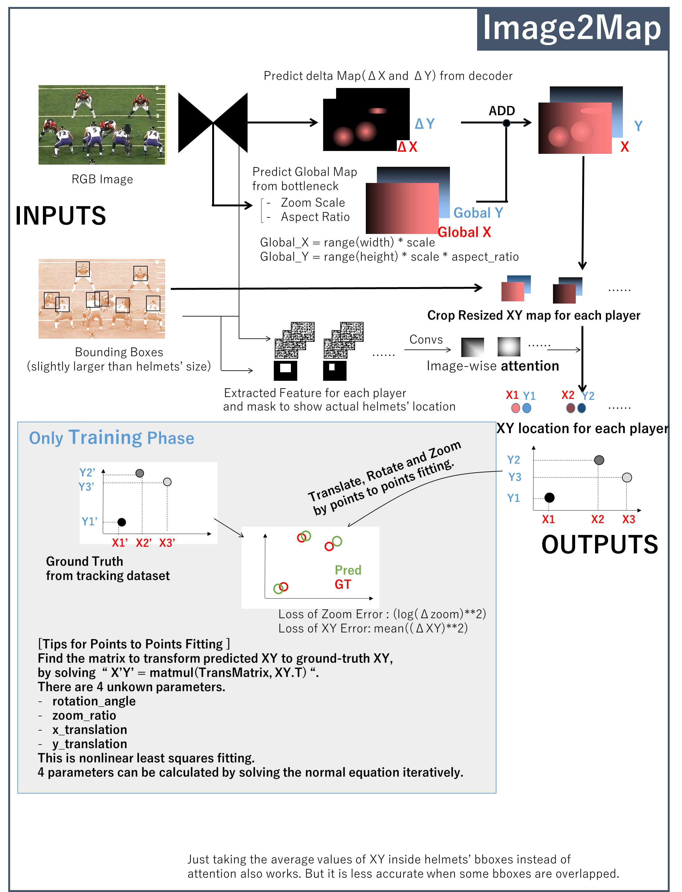
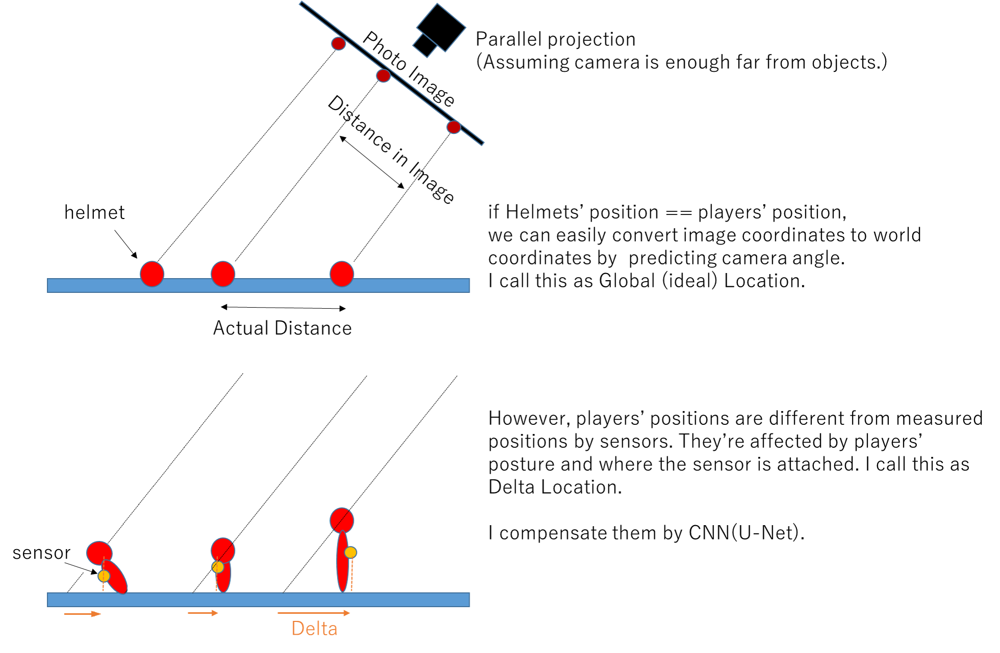
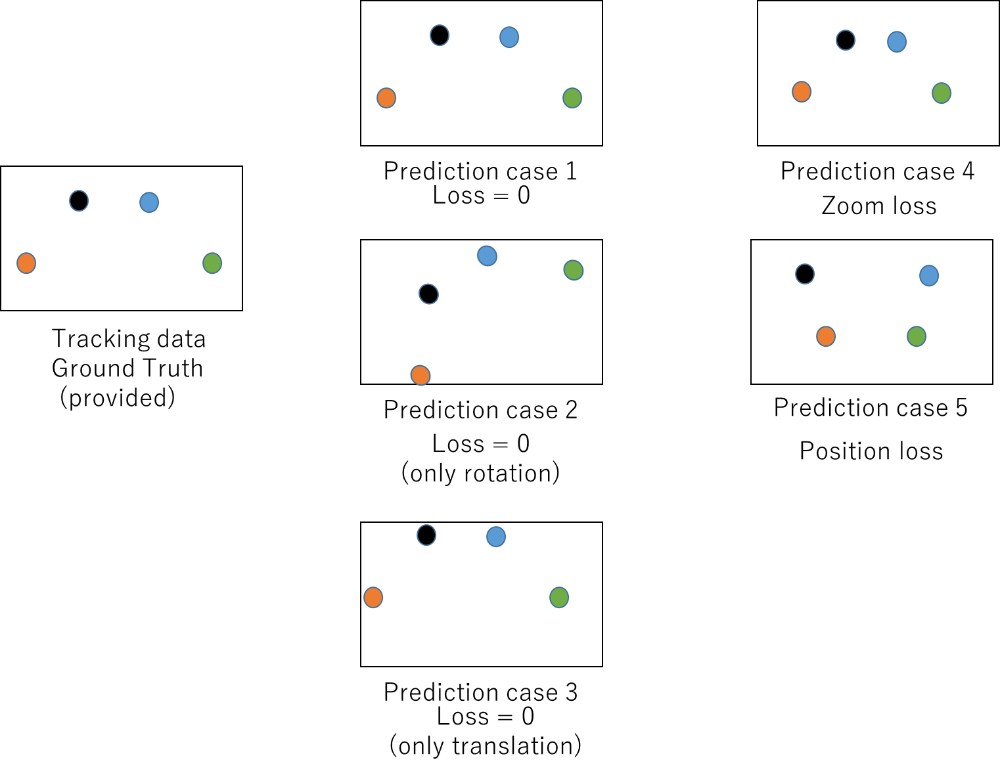
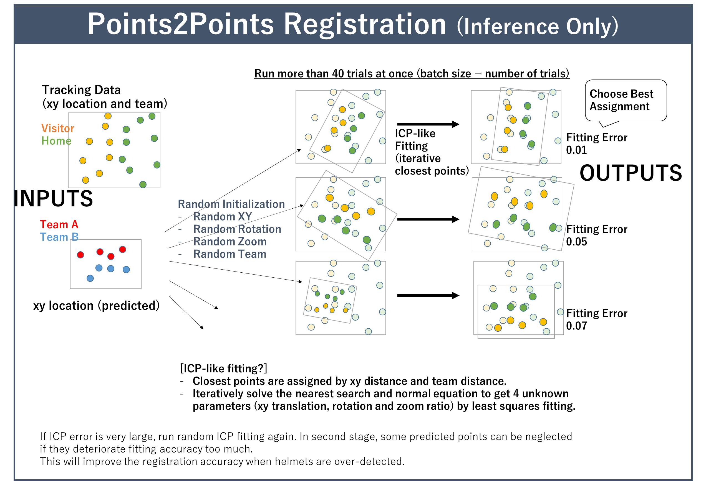
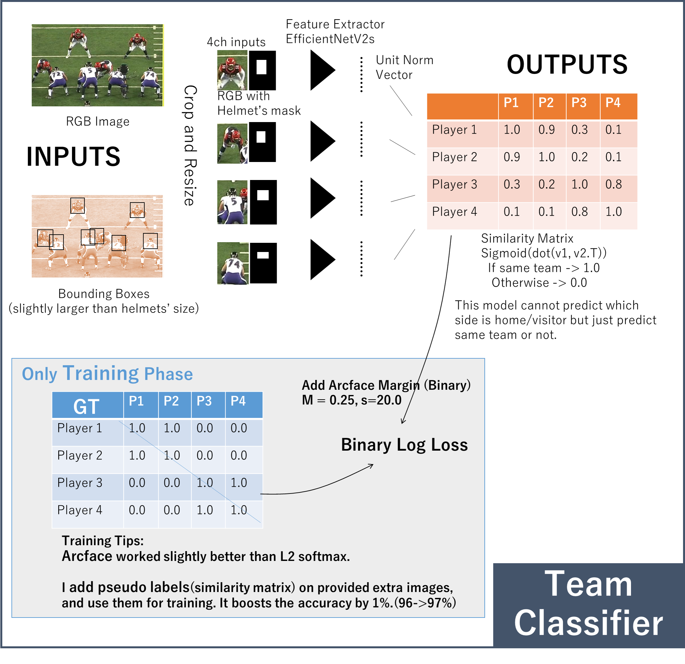
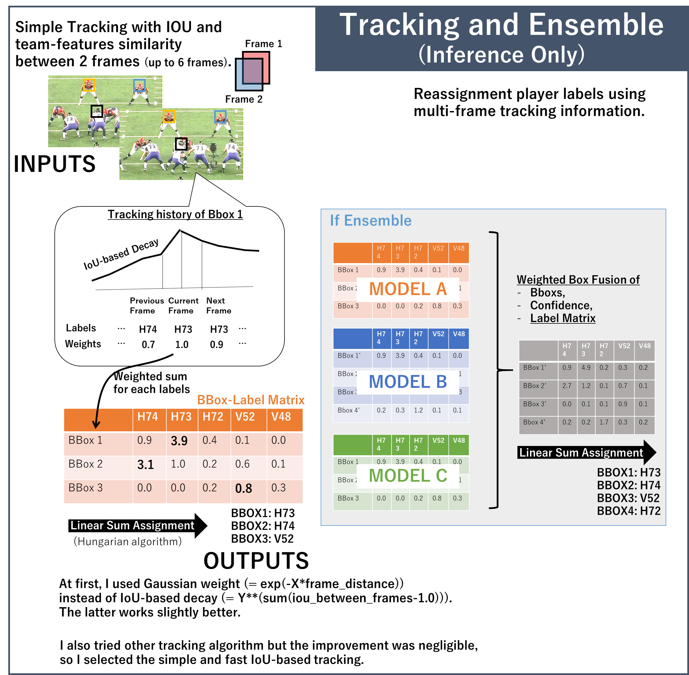
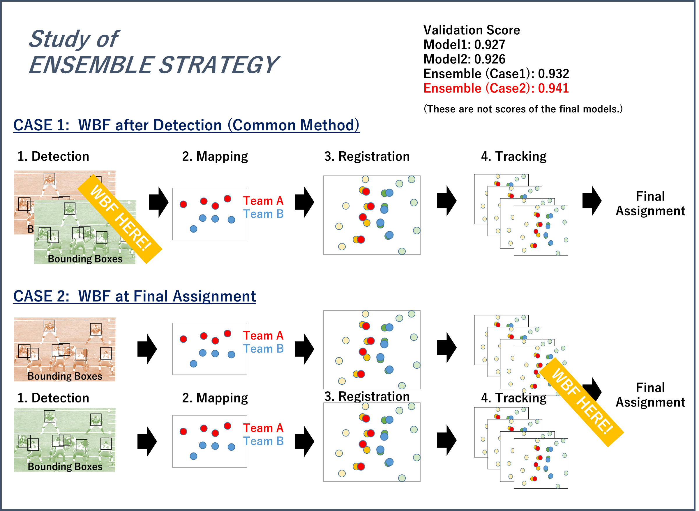
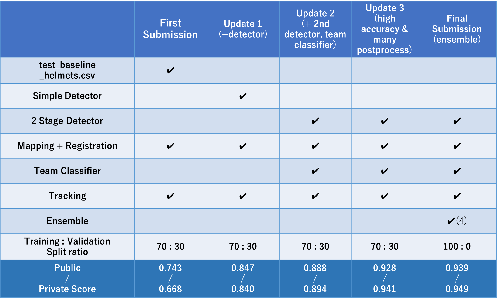

Thanks to organizers for this interesting challenge and congrats everyone who enjoyed it! It’s one of the most fun competitions that I’ve ever experienced. I especially appreciate Rob’s supports before and during competition. I believe he makes this competition such great thing.
It’s really tough challenge. It requires various skills of detection, registration, optimization and tracking (and debugging). I guess many competitors build complicated pipelines, and struggled to debug it. I respect those who have completed this competition until the end. Congratulations!
Overview of my solution
My pipeline consists of:
- Detector to find helmets.
- Converter to project movies’ images to 2D map (bird’s eye view).
- Classifier to classify players into 2(H/V) teams.
- Registration of detected players on 2D map to provided tracking data.
- Track detected bounding boxes and reassign players.
I guess the key difference between my solution and public notebooks is the mapping and registration modules, which gave me the score of approx. 0.8 only by helmets.csv though it works faster than 10 frames/sec on GPU.
Let me explain each modules briefly.

01. Helmet Detector
- 2 stage detector to find helmets.
- 1st detector predicts the average helmets’ size and resize input images (higher resolution) based on it.
- 2nd detector detects helmets in high resolution images. I thought detecting fixed-size objects is easier than detecting objects of various sizes.
我的理解：
- 该步生成的俯瞰视角坐标其坐标系是不确定的，即这一步主要用于确定画面中的头盔在俯瞰视角下的相对位置，而不是绝对坐标。
- 训练时：拿原始图像训练stage1模型，得到每张图中头盔的平均尺寸，然后将该图像缩放，使得stage1模型缩放后预测框的平均尺寸在25x25左右。进而拿缩放后的图像及标签训练stage2模型。
- 预测时：第一个检测器初步检测出图片中的头盔，依据这些头盔检测框的平均尺寸对原始图像进行缩放，然后将缩放后的图像输入第二个检测器，预测得到最终的检测框，最后将预测得到的检测框坐标缩放到原始图像的坐标系下。
- 为什么这么做：随着镜头的拉近拉远，运动员在画面里的身形会时大时小，因此检测器难以习得运动员头盔的具体尺寸

02. Image to Map Converter
- CNN(U-Net base) to convert helmets’ bounding boxes in images to 2D map. It predicts 2D location(x and y) looking from camera location.
- It outputs the global location from bottleneck and small residuals from decoder.
- Attention by helmets bounding-boxes improves accuracy.
我的理解：
- 训练时：已知图片中K个运动员对应的头盔真实框（标签）、总计22个运动员该时刻在场地上的绝对坐标、检测算法对于图片中N个头盔的预测框、以及Image2Map模型基于N个预测框生成的N个预测坐标，因而可以知道每个预测框对应哪个运动员（真实框与预测框进行基于IOU距离的匈牙利匹配），进而知道N个预测坐标与22个绝对坐标的一一对应关系（N<22）。此时就可以迭代计算点集与点集的变换矩阵与变换误差，使用这个误差来更新Image2Map模型。
- 预测时：根据测试图片中的N个预测框用Image2Map模型生成N个预测坐标，同时将队伍信息转化为点的第三维坐标，然后与标签中的K个运动员坐标开始进行ICP点云配准。由于ICP非常依赖于初始的点云对齐（即每个预测坐标到底该与哪个真实坐标计算欧氏距离），因此每帧图像的点云配准会重复进行40+次的ICP，每次ICP配准之前都会对Image2Map模型生成的N个预测坐标整体进行随机的旋转、平移、缩放，然后与K个真实坐标进行迭代配准，最后计算本次ICP的拟合误差，取40次ICP拟合中误差较小的作为点云配准结果。



（ Players' position in tracking data is the ground truth but the loss in this model is determined adaptively and actual target values(labels?) are not fixed in advance. ）
03. Points to Points Registration
- Matching predicted players on 2D map to the provided tracking data.
- ICP (Iterative Closest Points) based algorism. Iteratively solve the nearest search and normal equation to get 4 unknown parameters (xy translation, rotation and zoom ratio) by least squares fitting.
- Pre/post-processing is applied to remove inappropriate predictions such as sideline players.
我的理解：
- 使用之前帧的配准结果为初始值，添加L2损失限制移动
- 根据相机位置限制旋转角度
- 忽略远离其他球员的点


04. Team Classifier
- Team information is also important to improve the registration accuracy. X,Y location and team can be used in Points to Points Registration above.
- CNN classifier predicts the similarity matrix to show each pair of players belongs to the same team or not.
- Using arcface and pseudo-labeling improved the accuracy. Validation score is approx. 97%.
我的理解：
- 队伍信息对提高配准的准确性很重要。作者使用CNN分类器对每个预测的头盔生成embedding，embedding之间两两计算相似度得到相似矩阵，相似矩阵的值表示每一对球员是否为同队。作者在这里使用了arcface和伪标签来提高准确性。

05. Tracker
- Tracker accumulates the results of player assignment through all frames, and re-assign players to bounding boxes.
- I applied simple IoU tracker because it’s fast and enough accurate.
- Not only frequency but also tracking confidence and frame distance is used for reassignment. Assignment results far from the target frame should not be weighted.
我的理解：
- 比如现在对第N帧的所有bbox进行目标修正，将第N帧的A个bbox与第N-1帧的B个bbox分别计算IOU与队伍相似度（拿Team Classifier计算得到的128维特征向量），得到A行B列的IOU距离矩阵和A行B列的队伍相似度矩阵，根据这两个矩阵和匈牙利匹配得到第N帧与第N-1帧各bbox之间的匹配结果，同理得到第N+1帧与第N帧各bbox的匹配结果，不过注意作者只对前后6帧进行目标追踪。现在考虑第N帧的bbox1，依据第N-1帧与当前帧的帧距离和IOU设定第N-1帧匹配结果的Weights，同理得到附近其他帧匹配结果的Weights，进而得到下图的橙色匹配矩阵，就可以使用匈牙利匹配修正当前帧的匹配结果。

06. Ensemble
- WBF(Weighted Box Fusion) is applied in the reassignment phase in the tracker. It ensembles multi-frame and multi-model predictions.
- Take the weighted average of the player-assignment matrix of each models, then choose the final assignment by Hungarian algorithm. It works better than normal WBF which ensembles the results of bounding boxes and detection confidences only.
- 4 detectors’ ensemble for final submission.
我的理解：
- WBF集成了多帧多模型的预测结果，先得出每个模型在当前帧的球员分配矩阵（上图橙色矩阵），然后将各模型在当前帧的检测框进行WBF融合，得到各模型混合后的检测框，进而将各模型的球员分配矩阵根据WBF结果进行融合，最后通过匈牙利匹配选择最终分配结果

Scores History

自己的理解：test_baseline_helmets.csv是官方提供的测试集头盔预测框。从图中可以看出，训练自己的检测模型对最终得分有明显的提升。图中的Training: Validation Split ratio指的是作者将原本全量的训练集拆分为训练集和本地验证集，划分比例仅影响Image2Map模型和Team模型。
冠军方案的main文件，需要配合冠军放出的nfl2solution包才能使用
将nfl2solution/model/路径下的5个py文件替换为上面压缩文件里的py文件
冠军网络中部分特征图和预测结果的可视化及代码